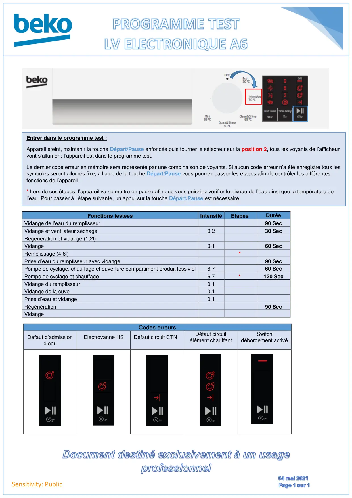

Prog Test lave vaisselle Electronique A6

Sensitivity: PublicFonctions testéesIntensitéEtapesDuréeVidange de l’eau du remplisseur90 SecVidange et ventilateur séchage0,230 SecRégénération et vidange (1,2l)Vidange0,160 SecRemplissage (4,6l)*Prise d’eau du remplisseur avec vidange90 SecPompe de cyclage, chauffage et ouverture compartiment produit lessiviel6,760 SecPompe de cyclage et chauffage6,7*120 SecVidange du remplisseur0,1Vidange de la cuve0,1Prise d’eau et vidange0,1Régénération90 SecVidangeCodes erreursDéfaut d’admissiond’eauElectrovanne HSDéfaut circuit CTNDéfaut circuitélément chauffantSwitchdébordement activéEntrer dans le programme test :Appareil éteint, maintenir la touche Départ/Pause enfoncée puis tourner le sélecteur sur la position 2, tous les voyants de l’afficheurvont s’allumer : l’appareil est dans le programme test.Le dernier code erreur en mémoire sera représenté par une combinaison de voyants. Si aucun code erreur n’a été enregistré tous lessymboles seront allumés fixe, à l’aide de la touche Départ/Pause vous pourrez passer les étapes afin de contrôler les différentesfonctions de l’appareil.* Lors de ces étapes, l’appareil va se mettre en pause afin que vous puissiez vérifier le niveau de l’eau ainsi que la température del’eau. Pour passer à l’étape suivante, un appui sur la touche Départ/Pause est nécessaire
1 / 1